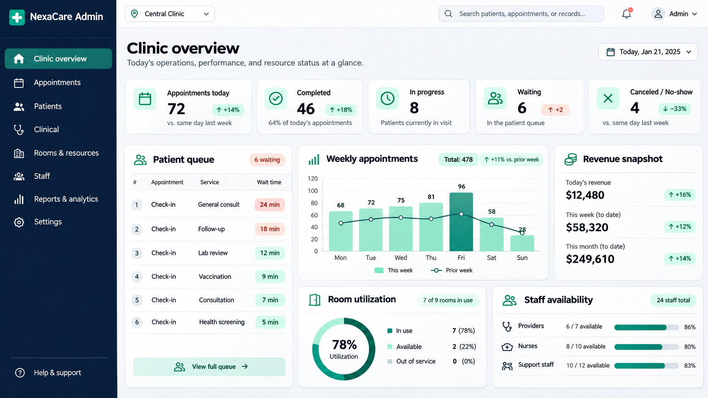
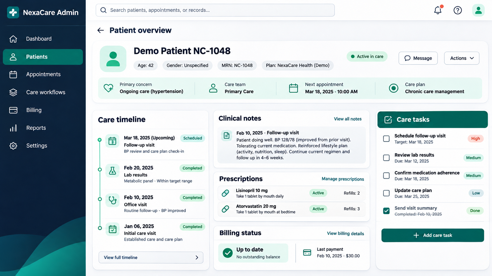

Concept overview
A fictional clinic operations concept connecting patient self-service, appointments, care workflows, billing and resource planning in one clear platform. This self-directed concept demonstrates how we would approach the product, workflows and technical structure; it is not presented as commissioned client work.
The business challenge
Growing clinics often manage bookings, patient follow-ups, staff schedules, rooms and billing across separate tools. That fragmentation can create duplicate work, incomplete handovers and limited visibility into the day ahead.
The proposed solution
NexaCare is a self-directed product concept for a connected clinic workspace. Patients can find specialists, book visits and review reminders, while clinic teams get a shared operational dashboard, patient timelines, care tasks, billing status and resource utilization. The concept prioritizes clear information hierarchy, privacy-aware demo data and fast access to daily actions.
Capabilities demonstrated
Public website features
- Patient self-service dashboard
- Specialist discovery and appointment booking
- Upcoming visit reminders
- Treatment and prescription overview
Admin panel features
- Live appointment and waiting queue
- De-identified patient records
- Care timeline and clinical notes
- Prescription and care task tracking
- Billing and payment status
- Room and staff utilization
- Operational analytics
- Role-based workspace access
Proposed technology stack
Explore our technology stack and development approach.
What this concept demonstrates
This concept demonstrates product discovery, workflow mapping, information architecture, responsive interface design and a proposed Laravel application structure. The screens and data are original portfolio materials created for demonstration; they do not represent a commissioned client system.
A closer look


Potential business value
A platform following this model could reduce repeated data entry, make appointment demand easier to plan and give care teams a clearer view of outstanding work. The concept also shows how patient-facing and administrative experiences can share one consistent system without exposing sensitive information.